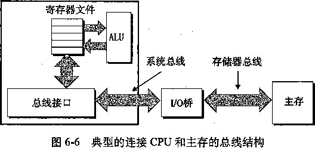

这个函数执行2«个乘法和《个加法。
我们可以看到，这里限制性能的计算是反复地计算表达式xpwr = x ★ xpwro这需要一个双精度 浮点数乘法（5个时钟周期），并且直到前一次迭代完成，下一次迭代的计算才能开始。两次连续的迭代之 间，对;result的更新只需要一个浮点加法（3个时钟周期）。
练习题 5.6这道题说明了最小化一个计算中的操作数量不一定会提高它的性能。
这个函数执行《个乘法和《个加法，是原始函数poly中乘法数量的一半。
我们可以看到，这里的性能限制计算是反复地计算表达式result =- a[i] + x * result。从 来自上一次迭代的result的值开始，我们必须先把它乘以x (5个时钟周期），然后把它加上a[i] (3个 时钟周期），然后得到本次迭代的值。因此，每次迭代造成了最小延迟时间8个周期，正好等于我们测量到 的 CPE 0
虽然函数poly中每次迭代需要两个乘法，而不是一个，但是只有一条乘法是在每次迭代的关键路 径上出现。
练习题 5.7下面的代码直接遵循了我们对 灸 次展开一个循环所阐述的规则：.
void unroll5(vec^ptr v, data_t *dest)
long int i;
long int length = vec_length(v); long int limit = length-4; data_t *data = get_vec_start(v); data_t acc = IDENT;
/* Combine 5 elements at a time */
for (i = 0; i < limit; i+=5) {
acc = acc OP data[i] OP data[i+1];
acc = acc OP data[i+2] OP data[i+3];
acc = acc OP data[i+4];
/伞 Finish any remaining elemoiits */ for (; i < length; i++) { acc = acc OP data[i];
20
21
练习题 5.8这道题目说明了程序中小小的改动可能会造成很大的性能不同，特别是在乱序执行的机器上。 图5-39画出了该函数一次迭代的3个乘法操作。在这张图中，关键路径上的操作用黑色方框表示——它们 需要按照顺序计算，计算出循环变量r的新值。浅色方框表示的操作可以与关键路径操作并行地计算。对 于一个关键路径上有c个操作的循环，每次迭代需要最少5c个时钟周期，会计算出3个元素的乘积，得到 CPE的下界5c/3。也就是说，A1的下界为5.00，A2和A5的为3.33,而A3和A4的为1.67。
Al: ((r*x)*y)*z A2: (r*(x*y))*z A3: r*((x*y)*z) A4: r*(x*(y*z)) A5: (r*x)*(y*z)
图 5-39 对于练习题 5.8 中各种情况乘法操作之间的数据相关
在Intel Core i7上运行这些函数，确实得到A1的CPE为5.00, A3和A4的为1.67。出于某些原因 ， A2和A5的CPE只有3.67,表明这两个函数每次迭代需要11个时钟周期，而不是预测的10个。
练习题 5.9这道题又说明了编码风格上的小变化能够让编译器更容易地察觉到使用条件传送的机会：
while (il < n && i2 < n) { int vl = srcl [il]; int v2 = src2[i2]; int takel = vl < v2; dest [id++] = takel ? vl : v2;
+= takel;
+= (1-takel);
>
对于这个版本的代码，我们测量到CPE大约为11.50,比原始的CPE17.50有了明显的提高。
练习题 5.10这道题要求你分析一个程序中潜在的加载-存储相互影响。
对于0</< 998,它要将每个元素a [i]设置为/+1。
B•对于l</< 999,它要将每个元素a [幻设置为0。
在第二种情况中，每次迭代的加载都依赖于前一次迭代的存储结果。因此，在连续的迭代之间有写 /读相关。有一个很有趣的现象值得注意，它的CPE等于5.00,比对函数write一read的示例B测量到的 CPE小1。这是由于write_read在存储这个值之前先增加了它，这需要一个时钟周期。
得到的CPE等于2.00,与示例A的相同 ， 这是因为存储和后续的加载之间没有相关。
练习题 5.11我们可以看到，这个函数在连续的迭代之间有写/读相关一——次迭代中的目的值P[幻与 下一次迭代中的源值P[i-1]相同。
练习题 5.12下面是对这个函数的一个修改版本 ：
void psnmla(float a[], float p[], long int n)
{
long int i;
/* last_val holds p [i-1]; val holds p[i] */
float last_val, val;
last_val = p[0] = a [0];
for (i = 1; i < n; i++) {
val = last_val + a[i];
p[i] = val;
last_val = val;
>
12 }
我们引入了局部变量last一val。在迭代i的开始，last一val保存着p [i_l]的值。然后我们计算 val为p[i]的值，也是last—val的新值。
这个版本编译得到如下汇S代码 ••
psumla. a in %rdi , p in %rsi, i in %rax # CDt in %rdx , last jval in %xmm0
.L18 ： loop:
addss (%rdi,%rax,4), %xmm0 last—val = val ~ last 一 val + a[i]
movss 7oxmmO, (7 0 rsi,°/ 0 rax,4) Store val in p[i]
addq $1, %rajc Increment i
cmpq %rax, %rdx Compare cnt：i
jg .L18 If >, goto loop
这段代码将last一val保存在％xmm0中，避免了需要从存储器中读出p[i-1],因而消除了 psuml 中看到的写/读相关。
练习题 5.13这个问题说明了 Amdahl定律不仅仅只适用于计算机系统。
按照等式（5-4),我们有ot= 0.6和灸=1.5。更直观地说，穿过Montana行驶1500公里需要10个小 时，而剩下的行程也需要10个小时。这会得到加速比为25/(10+10)=1.25。
B.按照等式（5-4),我们有《=0.6,而我们需要斤5/3,根据这些可以解出灸。更直观地说，为了使行 程加速5/3,我们必须将整个时间降低到15个小时。Montana之外的部分仍然需要10个小时，所以必须在 5个小时内通过Montana。这要求行驶速度为每小时300公里，对于卡车来说实在是太快了！
练习题5.14通过练习一些示例是理解Amdahl定律的最好方法。这个例子要求你从一个不同寻常的角度 来看等式（5-4)。这道题是这个等式的一个简单应用。给定>2和《=0.8,而你必须解出I
2 =
(1 一 0.8) + 0.8/ k
0.4 + 1.6/^ = 1.0
k = 2.67
|第6章|
| Computer Systems ： A Programmer’s Perspective, 2E
存储器层次结构
到目前为止，在对系统的研究中，我们依赖于一个简单的计算机系统模型，CPU执行指令, 而存储器系统为CPU存放指令和数据。在简单模型中，存储器系统是一个线性的字节数组，而 CPU能够在一个常数时间内访问每个存储器位置。虽然迄今为止这都是一个有效的模型，但是 它没有反映现代系统实际工作的方式。
实际上 ， 存储器系统 （memory system)是一个具有不同容量、成本和访问时间的存储设 备 的层次结构。CPU寄存器保存着最常用的数据。靠近CPU 的 小的、快速的高 速缓存存储器 (cache memory)作为一部分存储在相对慢速的主存储器(main memory,简称主存）中的数据和 指令的缓冲区域。主存暂时存放存储在容量较大的、慢速磁盘上的数据，而这些磁盘常常又作为 存储在通过网络连接的其他机器的磁盘或磁带上的数据的缓冲区域。
存储器层次结构是可行的，这是因为与下一个更低层次的存储设备相比来说，一个编写良好 的程序倾向于更频繁地访问某一个层次上的存储设备。所以，下一层的存储设备可以更慢速一 点，也因此可以更大，每个位更便宜。整体效果是一个大的存储器池，其成本与层次结构底层最 便宜的存储设备相当，但是却以接近于层次结构顶部存储设备的高速率向程序提供数据。
作为一个程序员，你需要理解存储器层次结构，因为它对应用程序的性能有着巨大的影 响。如果你的程序需要的数据是存储在CPU寄存器中的，那么在指令的执行期间，在零个周期 内就能访问到它们。如果存储在高速缓存中，需要1〜30个周期。如果存储在主存中，需要 50〜200个周期。而如果存储在磁盘上，需要大约几千万个周期！
这里就是计算机系统中一个基本而持久的思想：如果你理解了系统是如何将数据在存储器层 次结构中上上下下移动的，那么你就可以编写你的应用程序，使得它们的数据项存储在层次结构 中较高的地方，在那里CPU能更快地访问到它们。
这个思想围绕着计算机程序的一个称为 局部性 （locality)的基本属性。具有良好局部性的程 序倾向于一次又一次地访问相同的数据项集合，或是倾向于访问邻近的数据项集合。具有良好局 部性的程序比局部性差的程序更多地倾向于从存储器层次结构中较高层次处访问数据项，因此运 行得更快。例如，不同的矩阵乘法核心程序执行相同数量的算术操作，但是有不同程度的局部 性，它们的运行时间可以相差20倍！
在本章中，我们会看看基本的存储技术（SRAM存储器、DRAM存储器、ROM存储器和 旋转的和固态的硬盘）并描述它们是如何被组织成层次结构的。特别地，我们将注意力集中在 高速缓存存储器上，它是作为CPU和主存之间的缓存区域，因为它们对应用程序性能的影响最 大。我们向你展示如何分析C程序的局部性，而且我们还介绍改进你的程序中局部性的技术。 你还会学到一种描绘某台机器上存储器层次结构的性能的有趣方法，称为“存储器山”（memory mountain),它给出的读访问时间是局部性的一个函数。
6.1 存储技术
计算机技术的成功很大程度上源自于存储技术的巨大进步。早期的计算机只有几千字节的随 机访问存储器。最早的IBM PC甚至没有硬盘。1982年引入的IBM PC-XT有10M字节的磁盘。 到2010年，主流机器已有150 000倍于PC-XT的磁盘存储，而且磁盘的容量以每两年加倍的速
度增长。
6.1.1随机访问存储器
随机访问存储器 （Random-Access Memory, RAM)分为两类：静态的和动态的。静态 RAM (SRAM)比动态RAM (DRAM)更快，但也贵得多。SRAM用来作为高速缓存存 储器，既可以在CPU芯片上，也可以在片下。DRAM用来作为主存以及图形系统的帧缓冲 区。典型地，一个桌面系统的SRAM不会超过几兆字节，但是DRAM却有几百或几千兆 字节。
1.静态RAM
SRAM将每个位存储在 一个双稳态的 （bistable)存储器单元里。每个单元是用一个六晶 体管电路来实现的。这个电路有这样一个属性，它可以无限期地保持在两个不同的电压配置
(configuration)或辑态（state)之一。其他任何状态都是不稳定的 从不稳定状态开始,
电路会迅速地转移到两个稳定状态中的一个。这样一个存储器单元类似于图6-1中画出的倒转的 钟摆。
当钟摆倾斜到最左边或最右边时，它是稳定的。在其他任何位置，钟摆都会倒向一边 或另一边。原则上，钟摆也能在垂直的位置无限期地保持平衡，但是这个状态是亚 稳态的 (metastable)——最细微的扰动也能使它倒下，而且一旦倒下就永远不会再恢复到垂直的位置。
由于SRAM存储器单元的双稳态特性，只要有电，它就会永远地保持它的值。即使有干扰,
图6-1倒转的钟摆。同SRAM单元一样，钟摆只有两个稳定的配置或状态
例如电子噪音，来扰乱电压，当干扰消除时，电路就会恢复到稳定值。
2.动态RAM
DRAM将每个位存储为对一个电容的充电。这个电容非常小，通常只有大约30毫微微法拉 (femtofarad)——30X10_ 15 法拉。不过，回想一下法拉是一个非常大的计量单位。DRAM存储 器可以制造得非常密集——每个单元由一个电容和一个访问晶体管组成。但是，与SRAM不同， DRAM存储器单元对干扰非常敏感。当电容的电压被扰乱之后，它就永远不会恢复了。暴露在 光线下会导致电容电压改变。实际上，数码照相机和摄像机中的传感器本质上就是DRAM单元 的阵列。
很多原因会导致漏电，使得DRAM单元在10〜100毫秒时间内失去电荷。幸运的是，计算 机运行的时钟周期是以纳秒来衡量的，这个保持时间相当地长。存储器系统必须周期性地通过读 出，然后重写来刷新存储器的每一位。有些系统也使用纠错码，其中计算机的字会被多编码几个 位（例如32位的字可能用38位来编码)，这样一来，电路可以发现并纠正一个字中任何单个 的错误位。
图6-2总结了 SRAM和DRAM存储器的特性。只要有供电，SRAM就会保持不变。与 DRAM不同，它不需要刷新。SRAM的存取比DRAM快。SRAM对诸如光和电噪声这样的干扰 不敏感。代价是SRAM单元比DRAM单元使用更多的晶体管，因而密集度低，而且更贵，功耗 更大。
每位晶体管数 |
相对访问时间 |
持续的？ |
敏感的？ |
相对花费 |
应用 |
|
SRAM |
6 |
IX |
是 |
否 |
100X |
•高速绫存存储器 |
DRAM |
1 |
10X |
否 |
是 |
IX |
主存，帧缓冲区 |
图6-2 DRAM和SRAM存储器的特性
3.传统的DRAM
DRAM芯片中的单元（位）被分成d 个超单元 （supercell),每个超单元都由w 个 DRAM 单元组成。一个的DRAM总共存储了 rfvv位信息。超单元被组织成一个r行c列的长方形 阵列，这里每个超单元有形如(f,力的地址，这里表示行，而y表示列。
例如，图6-3展示的是一个16X8的DRAM芯片的组织，有rf=16个超单元，每个超单元有 w=8位， r=4ff, c=4列。带阴影的方框表示地址(2, 1)处的超单元。信息通过称 为引脚 （pin) 的外部连接器流入和流出芯片。每个引脚携带一个1位的信号。图6-3给出了两组引脚：8个 data引脚，它们能传送一个字节到芯片或从芯片传出一个字节，以及2个addr引脚，它们携 带2位的行和列超单元地址。其他携带控制信息的引脚没有显示出来。
DRAM芯片
(到 CPU)
图 6-3 — 个 128 位 16X8 的 DRAM 芯片的高级视图
-上超单元 ( 2 ， 1 )
关于术语的注释
存借领域从来没有为 DRAM 的阵列元素确定一个标准的名字。计算机构架师倾向于称之为 “ 单元 ” （ cell )，使这个术语具有 DRAM 存储单元之意。电路设计者倾向于称之为 “ 字 ” （ word),
使之具有主存一个字之意。为了避免混淆，我們采用了无歧义的术备 “ 超单元 ” （ supercell )。
' .■ ■ *. ■ ‘ . ■ - .
每个DRAM芯片被连接到某个称为存 储控制 器的电路,这个电路可以一次传送w位到每 个DRAM芯片或一次从每个DRAM芯片传出w位。为了读出超单元(/,力的内容，存储控制 器将行地址f发送到DRAM,然后是列地址y。DRAM把超单元仏力的内容发回给控制器作为响 应。行地址r称为RAS (Row Access Strobe,行访问选通脉冲）请求。列地址j•称为CAS (Column Access Strobe,列访问选通脉冲）请求。注意RAS和CAS请求共享相同的DRAM地址引脚。
例如，要从图 6 _ 3 中1 6 X 8 的DRAM中读出超单元( 2 ，1),存储控制器发送疗地址 2 , 如图 6-4a所示。DRAM的响应是将行2的整个内容都拷贝到一个内部行缓冲区。接下来，存储控制 器发送列地址1,如图 6 - 4 b所示。DRAM的响应是从行缓冲区拷出超单元( 2 , 1)中的 8 位， 并把它们发送到存储控制器。 .• •: ；
电路设计者将DRAM组织成二维阵列而不是线性数组的r个原因是降也芯片上地址引脚的 数量。例如,如果示例的128位DRAM被组织成一个16个超单元的线性数组 , 地址为0〜15, :
列
0 12 3
行
DRAM芯片
DRAM芯片
存储
控制器
data
瘦裡輕
& )选择行2(1^请求） ，
图6-4读一个DRAM超单元的内容
那么芯片会需要4个地址引脚而不是2个。二维阵列组织的缺点是必须分两步发送地址，这增加 了访问时间。
4.存储器模块
DRAM芯片包装 在存储器模块 （memory module)中，它是插到主板的扩展槽上的。常见的 包装包括168 个 引脚的 双列直插存储器模块 （Dual Inline Memory Module, DIMM),它以64位 为块传送数据到存储控制器和从存储控制器传出数据，还包括72 个 引脚的 单列直插存储器模块 (Single Inline Memory Module, SIMM),它以 32 位为块传送 数据。
图6-5展示了一个存储器模块的基本思想。示例模块用8个64Mbit的8MX8的DRAM芯 片，总共存储64MB (兆字节)，这8个芯片编号为0〜7。每个超单元存储主存的一个字节，而 用相应超单元地址为(f, j) 的8个超单元来表示主存中字节地址A处的64位双字 e 。在图6-5中 示例中，DRAM0存储第一个（低位）字节，DRAM 1存储下一个字节，依此类推。
要取出存储器地址A处的一个64位双字，存储控制器将A转换成一个超单元址(f, y), 并将它发送到存储器模块，然后存储器模块再将z•和y广播到每个DRAM。作为响应，每个 DRAM输出它的(/,力超单元的8位内容。模块中的电路收集这些输出，并把它们合并成一个 64位双字,再返回给存储控制器。
通过将多个存储器模块连接到存储控制器，能够聚合主存。在这种情况下，当控制器收到一 个地址i时，控制器选择包含4的模块t将^[转换成它的(/,力的形式，并将(W)发送到模块奴 IH练习题6.1接下来，设r表示一个DRAM阵列中的行数，C表示列数,\表示行寻址所需的位数， ^表示列寻址所需的位数。对于下面每个DRAM,确定2的幂数的阵列维数，使得max(&, 最小， max(h, 是对阵列的行或列寻址所需的位数中较大的值。
组织 |
r |
C |
K |
V |
max(6 r , b c ) |
16X1 |
|||||
16X4 |
|||||
128X8 |
|||||
512X4 |
|||||
1024 X4 |
㊀IA32会称64位为“四字”。
超单元(i, j)
由八个 8Mx8 的 DRAM组成的64MB 存储器模块
存储
控制器
增强的 DRAM
有许多种DRAM存储器，而生产厂商试图跟上迅速增长的处理器速度，市场上就会定期推 出新的种类。每种都是基于传统的DRAM单元，并进行了一些优化，改进了访问基本DRAM单 元的速度。
•快页模式 DRAM (Fast Page Mode DRAM, FPMDRAM)。传统的 DRAM 将超单元的一 整行拷贝到它的内部行缓冲区中，使用一个，然后丢弃剩余的。FPM DRAM允许对同一 行连续地访问可以直接从行缓冲区得到服务，从而改进了这一点。例如，要从一个传统的 DRAM的行 i 中读四个超单元，存储控制器必须发送四个RAS/CAS请求，即使是行地址 i 在每个情况中都是一样的。要从一个FPMDRAM的同一行中读取超单元，存储控制器发 送第一个RAS/CAS请求，后面跟三个CAS请求。初始的RAS/CAS请求将行f拷贝到行 缓冲区，并返回CAS寻址的那个超单元。接下来三个超单元直接从行缓冲区获得，因此比 初始的超单元更快。
• 扩展数据输出 DRAM (Extended Data Out DRAM, EDO DRAM)。FPM DRAM 的一个增 强的形式，它允许单独的CAS信号在时间上靠得更紧密一点。
•同步DRAM (Synchronous DRAM, SDRAM) 0 就它们与存储控制器通信使用一组显式的 控制信号来说，常规的、FPM和EDO DRAM都是异步的。SDRAM用与驱动存储控制器 相同的外部时钟信号的上升沿来代替许多这样的控制信号。我们不会深人讨论细节，最终 效果就是SDRAM能够比那些异步的存储器更快地输出超单元的内容。
• 双倍数据速率同步 DRAM (Double Data-rate Synchronous DRAM, DDR SDRAM)。DDR SDRAM是对SDRAM的一种增强，它通过使用两个时钟沿作为控制信号，从而使DRAM 的速度翻倍。不同类型的DDR SDRAM是用提高有效带宽的很小的预取缓冲区的大小来划
分的：DDR (2 位)、DDR2 (4 位）和 DDR3 (8 位)。
Rambus DRAM(RDRAM) 0 这是另一种私有技术，它的最大带宽比DDR SDRAM的更高。
•视频RAM (Video RAM, VRAM)。它用在图形系统的帧缓冲区中。VRAM的思想与FPM DRAM类似。两个主要的区别是：1) VRAM的输出是通过依次对内部缓冲区的整个内容 进行移位得到的；2) VRAM允许对存储器并行地读和写。因此，系统可以在写下一次更 新的新值（写)的同时，用帧缓冲区中的像素刷屏幕(读)。
DRAM技术流行的历史
直到1995年，大多数PC都是用FPM DRAM构造的。1996〜1999年，EDO DRAM在市 场上占据了优势，而FPM DRAM几乎销声匿迹了。SDRAM最早出现在1995年的高端系统中， 到2002年，大多数PC都是用SDRAM和DDRSDRAM制造的。到2010年之前，大多数服务 器和桌面系统都是用DDR3SDRAM构造的。实际上，Intel Core i7只支持DDR3 SDRAM。
非易失性存储器
如果断电，DRAM和JSRAM会丢失它们的信息，从这个意义上说，它们是易失的（volatile)。 另一方面，非易失性存储器（nonvolatile memory)即使是在关电后，也仍然保存着它们的信息。 现在有很多种非易失性存储器。由于房史原因，虽然ROM中有的类型既可以读也可以写，但是 它们整体上都称为只读存储器（Read-Only Memory, ROM)。ROM是以它们能够被重编程（写） 的次数和对它们进行重编程所用的机制来区分的。
PROM (Programmable ROM,可编程ROM)只能被编程一次。PROM的每个存储器单元有 一种熔丝（fUse),它只能用高电流熔断一次。
可擦写可编程ROM (Erasable Programmable ROM, EPROM)有一个透明的石英窗口，允许 光到达存储单元。紫外线光照射过窗口，EPROM单元就被清除为0。对EPROM编程是通过使 用一种把1写入EPROM的特殊设备来完成的。EPROM能够被擦除和重编程的次数的数量级可 以达到 1000 次。电子可擦除 PROM (Electrically Erasable PROM, EEPROM)类似于 EPROM, 但是它不需要一个物理上独立的编程设备，因此可以直接在印制电路卡上编程。EEPROM能够 被编程的次数的数量级可以达到10 5 次。
闪存（flash memory)是一类非易失性存储器，基于EEPROM,它已经成为了一种重要的存 储技术。闪存到处都是，为大量的电子设备提供快速而持久的非易失性存储，包括数码相机、手 机、音乐播放器、PDA和笔记本、台式机以及服务器计算机系统。在6.1.3节中，我们会仔细研 究一种新型的基于闪存的磁盘驱动器，称为固 态硬盘 （Solid State Disk, SSD),它能提供相对于 传统旋转磁盘更快速、更强健和更低能耗的选择。
存储在ROM设备中的程序通常称 为固件 （firmware)。当一个计算机系统通电以后，它会运 行存储在ROM中的固件。一些系统在固件中提供了少量基本的输入和输出函数——例如，PC 的BIOS (基本输入/输出系统）例程。复杂的设备，像图形卡和磁盘驱动控制器/也依赖固件 翻译来自CPU的I/O (输入/输出）请求。
访问主存
数据流通过称为总线(bus)的共享电子电路在处理器和DRAM主存之间来来回回。每 次CPU和主存之间的数据传送都是通过一系列步骤来完成的，这些步骤称为总线事务（bus transaction) 0 读事务（read transaction)从主存传送数据到 CPU。写事务（write transaction)从 CPU传送数据到主存。
总线是一组并行的导线，能携带地址、数据和控制信号。取决于总线的设计，数据和地址信 号可以共享同一组导线，也可以使用不同的。同时，两个以上的设备也能共享同一根总线。控制 线携带的信号佘同步事务，并标识出当前正在被执行的事务的类型。例如，当前关注的这个事务 是到主存的吗？还是到诸如磁盘控制器这样的其他I/O设备？这个事务是读还是写？总线上的信 息是地址还是数据项？
图6-6展示了一个示例计算机系统的配置。主要部件是CPU芯片、我们将称为I/O桥（I/O bridge)的芯片组（其中包括存储控制器)，以及组成主存的DRAM存储器模块。这些部件由一 对总线连接起来，其中一条总线是系 统总线 （systembus),它连接CPU和I/O桥,另一条总线 是存储器总线 （memorybus),它连接I/O桥和主存。
I/O桥将系统总线的电子信翻译成存储器总线的电子信号。正如我们着到的那样，I/O桥 也将系统总线和存储器总线$接到I/O总线，像磁盘和图形卡这样的I/O设备共享I/O总线。不 过现在，我们将注意力集中在存储器总线上。
CPU芯片

关于总线设计的注释
总线设计是计算机系铳中一个复杂而且变化迅速的方面。不同的厂商提出了不同的总线 体系结构，作为产品差异化的一种方法。例如 ， Intel 系统使用称为北桥 （northbridge) 和南桥 (southbridge) 的芯片组分别将 CPU 连接到存储器和 I/O 设备。在比较老的 Pentium 和 Core 2 系 统中，前端总线 （Front Side Bus, FSB) 将 CPU 连接到北桥。来自 AMD 的系统将 FSB 替换为 超传输 （HyperTransport) 互联，而更新一些的 Intel Core i7 系统使用的是快速通道 （QuickPath) 互联。这些木同总线体系结构的细节超出了本书的范围。反之，我们会使用图 6-6 中的高级总线 体系结构作为一个运行示例贯穿本书。这是一个简单但是有用的抽象，使得我们可以很具体，并 且可以掌握主要思想而不必与任何私有设计的细节绑得太紧。
考虑当CPU执行一个向下面这样的加载操作时会发生什么
movl A, _%eax
这里，地址3的内容被加载到寄存器％eax 中。 CPU芯片上称为总 线接口 (bus interface) 的电路发起总线上的读事务。读事务是由三个步骤组成的。首先，CPU将地址J放到系统总线 上。I/O桥将信号传递到存储器总线（见图6-、)。其次,主存感觉到存储器总线上的地址信号, 从存储器总线读地址,从DRAM取出数据字,「并将数据写到存储器总线。I/O桥将存储器总线 信号翻译成系统总线信号，然后沿着系统总线传递（见图6-7b)。最后，CPU感觉到系统总线上 的数据，从总线上读数据，并将数据拷贝到寄存器％63乂（见图6-7C)。
反过来，当CPU执行一个像下面这样的存储操作时
■ - - . * ' •
movl %eax, A
c) CPU 从总线读出字 X ，并将它拷贝到寄存器 %eax 中 图 6-7 加载操作 movl A, %eax 的存储器读事务
寄存器文件
这里，寄存器％eax的内容被写到地址儿CPU发起写事务。同样，有三个基本步骤。首先, CPU将地址放到系统总线上。存储器从存储器总线读出地址，并等待数据到达（见图6-8a)。其 次，CPU将％63%中的数据字拷贝到系统总线（见图6-8b)。最后，主存从存储器总线读出数据 字，并且将这些位存储到DRAM中（见图6-8c)。
6.1.2磁盘存储
磁盘是广为应用的保存大量数据的存储设备，存储数据的数量级可以达到几百到几千千兆字 节，而基于RAM的存储器只能有几百或几千兆字节。不过，从磁盘上读信息的时间为毫秒级， 从DRAM读比从磁盘读快10万倍，从SRAM读比从磁盘读快100万倍。
1 _磁盘构造
磁盘是 由盘片（ platter)构成的。每个盘片有两面或者称为表面 （ surface),表面覆盖着 磁性记录材料。盘片中央有一个可以旋转 的主轴（ spindle),它使得盘片以固定的旋 转速率 (rotational rate)旋转，通常是 5400 〜15 000 转每分钟 （Revolution Per Minute, RPM) 0 磁盘通 常包含一个或多个这样的盘片，并封装在一个密封的容器内。
图6-9a展示了一个典型的磁盘表面的结构。每个表面是由一组称 为磁道 （track)的同心圆 组成的。每个磁道被划分为一 组扇区 （sector)。每个扇区包含相等数量的数据位（通常是512字 节)，这些数据编码在扇区上的磁性材料中。扇区之间由一 些间隙 （gap)分隔开，这些间隙中不
存储数据位。间隙存储用来标识扇区的格式化位。
寄存器文件
<：：：:■
主存
i/o桥
总线接口
ALU
a) CPU将地:faU放到存储器总线。主存读出这个地址，并等待数据字 寄存器文件
主存
%eax
I/O桥
总线接口
b) CPU将数据字放到总线上
图6-8存储操作movl %eax，A的存储器写事务
磁盘是由一个或多个叠放在一起的盘片组成的，它们被封装在一个密封的包装里，如图
9b所示。整个装置通常称 为磁盘驱动器 （diskdrive),我们通常简称 为磁盘 （disk)。有时，我 们会称磁盘为旋 转磁盘 （rotating disk),以使之区别于基于闪存的固 态硬盘 （SSD), SSD是没有 移动的部分的。
磁道
麵灸 间隙
. 一 一 '/
0一个盘片的视图
o 12 3 4 5 面面面面面面
盘片< 盘片] 盘片:
主轴
b)多个盘片的视图
图6-9磁盘构造 www.TopSage.com
磁盘制造商通常用术语柱面（cylinder)来描述多个盘片驱动器的构造，这里，柱面是所有 盘片表面上到主轴中心的距离相等的磁道的集合。例如，如果一个驱动器有三个盘片和六个面, 每个表面上的磁道的编号都是一致的，那么柱面 k 就是六个磁道 k 的集合。
2.磁盘容量
一个磁盘上可以记录的最大位数称为它的最大容量，或者简称为容量。磁盘容量是由以下技 术因素决定的：
•记录密度 （recording density)(位/英寸）：磁道一英寸的段中可以放入的位数。
•磁道密度 （track density)(道/英寸）：从盘片中心出发半径上一英寸的段内可以有的磁 道数。
面密度 （areal density)(位/ 平方英寸） ：记录密度与磁道密度的乘积。
磁盘制造商不懈地努力以提高面密度（从而增加容量)，而面密度每隔几年就会翻倍。最初 的磁盘，是在面密度很低的时代设计的，将每个磁道分为数目相同的扇区，扇区的数目是由最靠 内的磁道能记录的扇区数决定的。为了保持每个磁道有固定的扇区数，越往外的磁道扇区隔得越 开。在面密度相对比较低的时候，这种方法还算合理。不过，随着面密度的提高，扇区之间的间 隙（那里没有存储数据位）变得不可接受地大。因此，现代大容量磁盘使用一种称为多 区记录 (multiple zone recording)的技术，在这种技术中，柱面的集合被分割成不相交的子集合，称为 记录区（recording zone)。每个区包含一组连续的柱面。一个区中的每个柱面中的每条磁道都有 相同数量的扇区，这个扇区的数量是由该区中最里面的磁道所能包含的扇区数确定的。注意，软 盘仍然使用的是老式的方法，每条磁道的扇区数是常数。
下面的公式给出了一个磁盘的容量：
_ 字节数 x 平均盘区数 x 磁道数 、 表面数 x 盘片数 扇区 磁道 X 表面 X 盘片 X 磁盘
例如，假设我们有一个磁盘，有5个盘片，每个扇区512个字节，每个面20 000条磁道， 每条磁道平均300个扇区。那么这个磁盘的容量是：
512 字节 300扇区
磁盘容量:
.20 000磁道2表面5盘片 ^ 表面 盘片 磁盘
扇区 磁道 =30 720 000 000 字节 =30.72GB
注意，制造商是以千兆字节（GB)为单位来表达磁盘容量的，这里1GB-10 9 字节。
一吉字节有多大？
不幸地，像K (kilo)、M (mega)、G (giga)和T (tera)这样的前級的含义依赖于上下文。 对于与DRAM和SRAM容量相关的计量单位，通常K = 2 1Q , M = 2 20 , G = 2 30 ,而T = 2 4 °。对于 与像磁盘和网络这样的I/O设备容量相关的计量单位，通常K=10 3 , M = IO 6 , G = 10 9 ,而T = 10'速率和呑吐量常常也使用这些前缀。
幸运地，对于我们通常依赖的不需要复杂计算的估计值，无论是哪种假设在实际中都工作得 很好。例如，2 2G = 1 048 576和10 6 = 1 000 000之间的相对差别很小：（2 2G —10 6 ) / 10 6 ~ 5%。类似 地，对于 2 30 = 1 073 741 824 和 10 9 = 1 000 000 000 ： (2 30 —10 9 )/ 10 9 ~7% o
_练习题 6.2 计算这样一个磁盘的容量，它有 2 个盘片 ， 10 000 个柱面 ， 每条磁遒平均有 400 个扇区 ， 而每个扇区有 512 个字节。